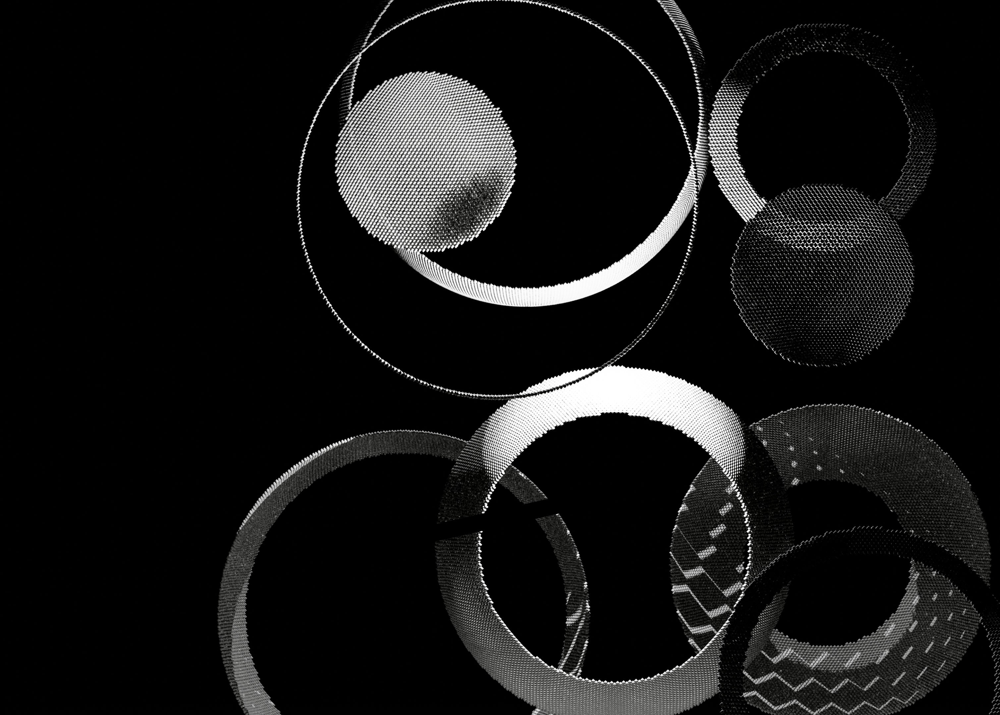
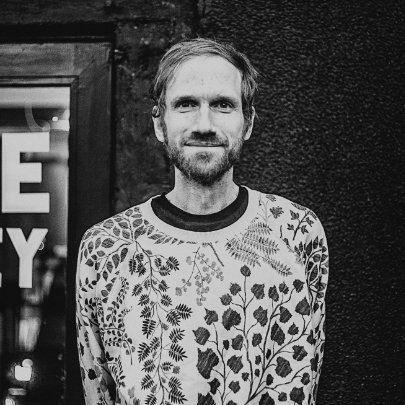
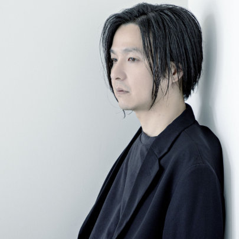
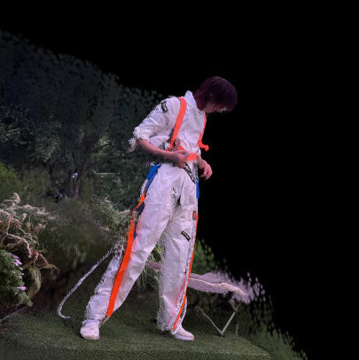
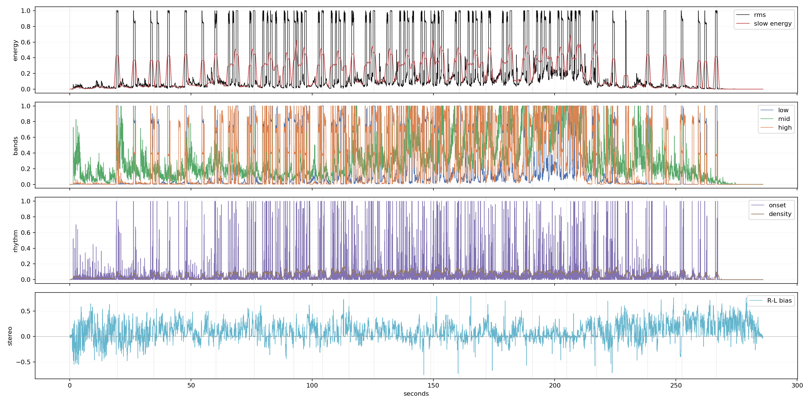
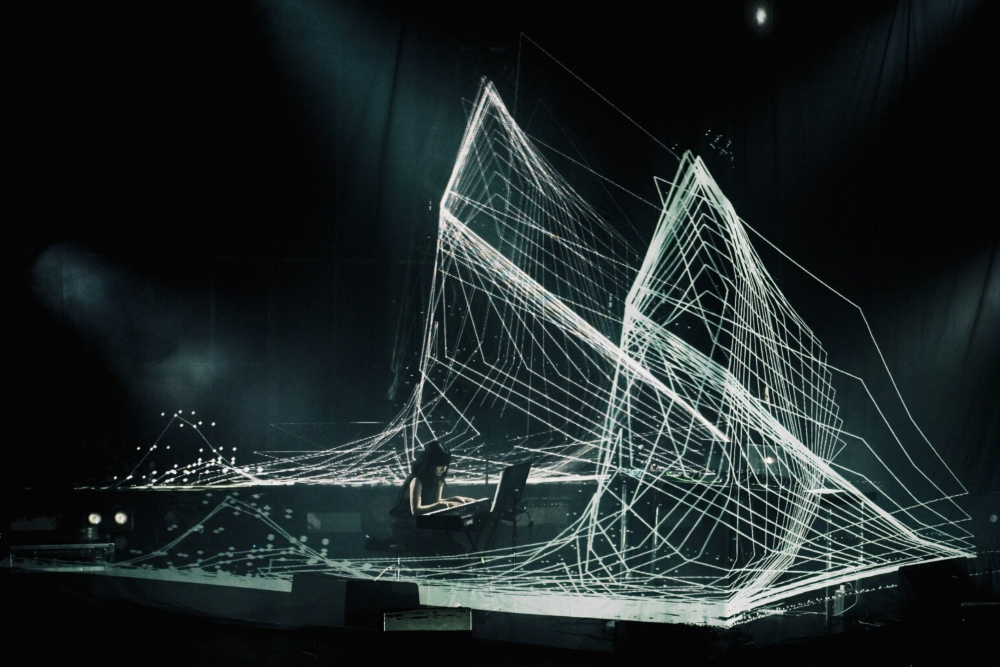
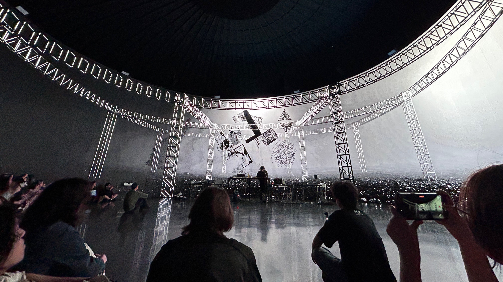
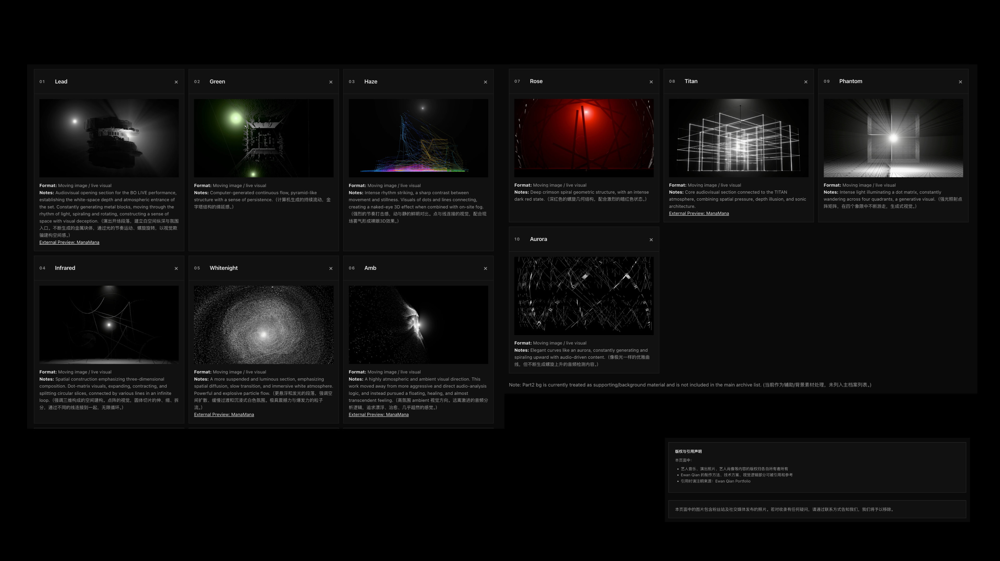

声音来源
音乐来自 Mikael Lind 与 KASHIWA Daisuke 的合作单曲，具有钢琴、电子与氛围音乐层次。

米凯尔·林德 × 柏大辅 × 钱誉文。
以一首尚未正式发布的合作单曲为声音基础，
整理项目 PDF、音频分析、Blender MCP
与空间视觉编排方法。
音乐来自 Mikael Lind 与 KASHIWA Daisuke 的合作单曲，具有钢琴、电子与氛围音乐层次。
画面不做音量条式反应，而围绕雾、白色空间、方向爆点、负空间和包裹感展开。
当前建立了演出文件与研究框架：音频分析已进入制作逻辑，最终可见层仍需人工筛选。
这个 demo 只做设计示意：先用一层白雾建立空间深度，再用左 / 中 / 右三个位置说明爆闪方向；细线负责快速引导视线，最后用一个向内收缩的白框表示音乐事件被迅速切掉。它不包含未发布音频，也不替代最终渲染。
空间感：先给出白色雾层和远近深度，不急着出现复杂图案。
方向爆闪：左、中、右只用位置和亮度判断，不做装饰性图案。
快速引领：一条细线把观众视线带向下一次爆点。
快速收缩：爆点之后立刻向中心压回，留下负空间。
关系可以更准确地写成：Mikael Lind 与 KASHIWA Daisuke 共同完成声音基础；钱誉文以这首音乐为材料，负责视觉系统、空间构成与现场版本的制作方法。

常驻冰岛雷克雅未克的实验氛围音乐作曲家与声音艺术家，创作横跨 ambient、noise 与 electronica。本项目中与柏大辅共同提供声音基础。

日本音乐人、作曲家与现场演出者，作品横跨电子音乐、钢琴、实验声音与跨媒介合作。本项目中的音乐合作方之一。

媒体艺术家、空间影像创作者与现场视觉制作人。在本项目中负责视觉方向、Blender 文件方法、空间编排与现场呈现。
这个页面不是给深圳专场做“续集标题”，而是把同一条合作方法继续整理成可读的研究节点：现场视觉、空间深度、雾、白色结构和音频触发逻辑在这里被重新组织。
公开演出语境：全息纱幕、白色空间、雾、光与现场观看关系已经在 BO LIVE 项目中建立。
研发整理语境：把新的音乐材料拆成 60fps 时间线、方向击点、sizzle 颗粒、Geometry Nodes 控制和审查规则。

拆解 raw pressure、onset、stereo bias、high/air grain 与 exact frames。
把压力、方向、颗粒和击点转成边缘灯、材质压力、雾场和短促爆点。
通过 no-fall-ahead、negative space 和 deletion-first 规则删掉过度生成。
PDF 负责说明合作是什么：未发布音乐、三位作者、视觉方向，以及它与 Kashiwa / TITAN 和 Drop Flow 方法之间的关系。网页在此基础上补充当前音频分析与 BlenderMCP 制作状态。



这不是“AI 已经自动生成最终视频”的页面。更准确的状态是：演出文件和控制框架已经建立，最终视觉层仍需要隐藏预览、人工 scrub 和导演判断。